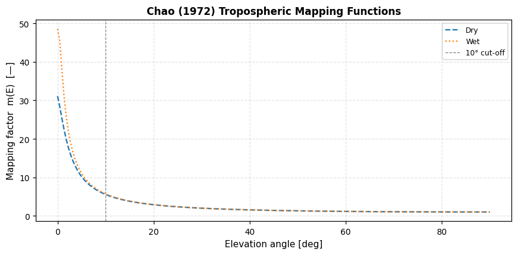
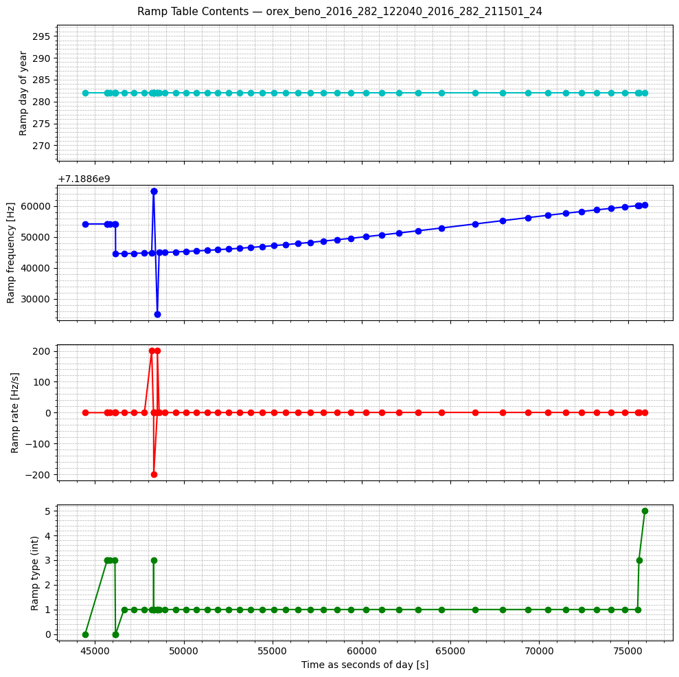
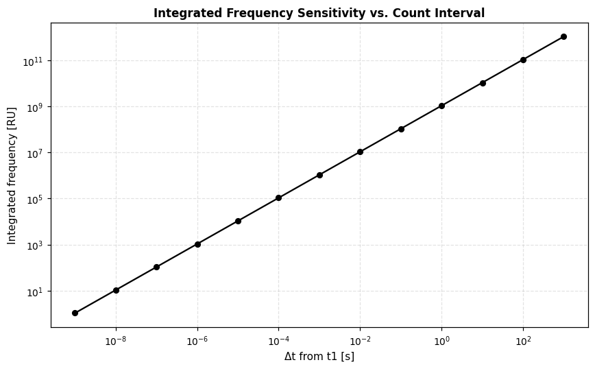
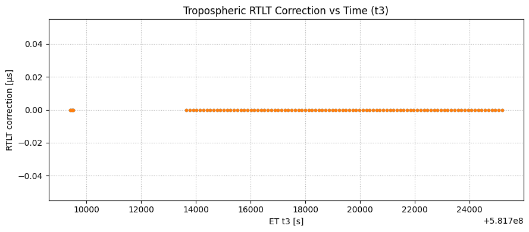
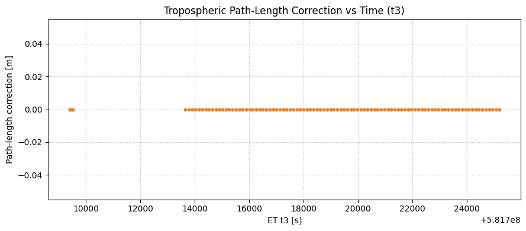

# OSIRIS-REx Real Data — Media Corrections & Ramp Tables#
Scarabaeus OD Framework | Last revised 2026
What this notebook covers#
This is a standalone notebook on atmospheric media corrections and DSN ramp tables using real OSIRIS-REx tracking data. These auxiliary data products must be applied to raw radiometric observables before they enter any orbit determination filter.
# |
Topic |
|---|---|
1 |
Setup — units, frames, SPICE kernels, ground stations |
2 |
Tropospheric delay models — seasonal and non-seasonal components |
3 |
DSN ramp table inspection and integrated frequency sensitivity |
4 |
Full RTLT media correction pipeline applied to real sequential ranging data |
See Also#
OSIRIS-REx OD Notebook — applies these corrections inside a full SRIF filter run
1. Setup#
Standard scientific imports plus scarabaeus and the tutorial supplementary helper. Units and frames are created once here and reused throughout all sections.
[1]:
import os
import numpy as np
import pandas as pd
import matplotlib.pyplot as plt
import supplementary as supp
import scarabaeus as scb
kg, km, sec, unitless = scb.Units.get_units(["kg", "km", "sec", "unitless"])
(J2000, ITRF93, ECLIPJ2000, IAUEARTH) = scb.Frame.generate_common_frames()
plt.rcParams.update({
'font.size': 10, 'axes.titlesize': 11, 'axes.labelsize': 10,
'xtick.labelsize': 9, 'ytick.labelsize': 9, 'legend.fontsize': 8,
'figure.dpi': 110, 'axes.grid': True, 'grid.alpha': 0.35, 'grid.linestyle': '--',
})
1.1 — SPICE Kernels and Ground Stations#
supp.load_data() ensures all tutorial data files are present, downloading or generating anything missing. load_kernel_from_mkfile() furnishes the complete OSIRIS-REx kernel set (SPK trajectories, PCK body constants, LSK leap-second, and frame kernels).
Three DSN complexes are used throughout this notebook:
Variable |
DSN ID |
Complex |
Location |
|---|---|---|---|
|
DSS-24 |
Goldstone |
California, USA |
|
DSS-35 |
Canberra |
Australia |
|
DSS-65 |
Madrid |
Spain |
[2]:
# load tutorial data
data = supp.load_data()
# load kernels
scb.SpiceManager.clear_kernels()
scb.SpiceManager.load_kernel_from_mkfile(data.OREx_real_data_mk.path)
# Ground stations (one per DSN complex)
GS_C10 = scb.GroundStation("DSS-24") # Goldstone, California
GS_C40 = scb.GroundStation("DSS-35") # Canberra, Australia
GS_C60 = scb.GroundStation("DSS-65") # Madrid, Spain
SCB supplementary data up to date.
2. Tropospheric Delay Models#
Radio signals passing through Earth’s troposphere acquire a non-dispersive path-length delay.
SCB decomposes the zenith tropospheric delay into two additive components, each stored in a separate JSON file:
Component |
File pattern |
Model |
|---|---|---|
Seasonal |
|
|
Non-seasonal |
|
|
Both files are nested by site (C10, C40, C60) and wet/dry component. MediaCorrections.get_media_data_for_et() retrieves the coefficient block that brackets any query epoch.
2.1 — Single-station, single-component query#
The simplest usage: one station, one epoch, one component (wet or dry).
Load the correction JSON and convert the UTC query time to SPICE ET.
Call
get_media_data_for_et()to retrieve the bracketing coefficient dictionary.Pass it to the appropriate model —
mediafun_trig(seasonal) ormediafun_nrmpow(non-seasonal) — which returns the zenith delay in meters.
[3]:
# load tutorial data
data = supp.load_data()
# load kernels
scb.SpiceManager.clear_kernels()
scb.SpiceManager.load_kernel_from_mkfile(data.OREx_real_data_mk.path)
# Load tropospheric correction files
tropo_seasonal_path = data.tropo_seasonal_new.path
tropo_nonseasonal_path = data.tropo_nonseasonal.path
#tropo_seasonal_path = "data/measurements/media_correction/1972_001_2048_001_tro_modified.json"
#tropo_nonseasonal_path = "data/measurements/media_correction/2010_001_2010_032_tro.json"
tropo_seasonal_dict = scb.Utils.load_json(tropo_seasonal_path)
tropo_dict = scb.Utils.load_json(tropo_nonseasonal_path)
# Query parameters
query_utc = "2010-01-15 00:07:00 UTC"
query_site = "C60" # "C10" | "C40" | "C60"
query_wetordry = "DRY" # "DRY" | "WET"
# Convert UTC to SPICE ephemeris time
query_et = scb.SpiceManager.utc2et(query_utc)
# Retrieve coefficient sub-dictionaries for the query epoch
aux_seasonal = scb.MediaCorrections.get_media_data_for_et(
tropo_seasonal_dict["aux_tropo"], query_site, query_wetordry, query_et
)
aux_non_seasonal = scb.MediaCorrections.get_media_data_for_et(
tropo_dict["aux_tropo"], query_site, query_wetordry, query_et
)
# Evaluate delay models (result in meters)
delta_m_seasonal = scb.MediaCorrections.mediafun_trig(aux_seasonal, query_et)
delta_m_non_seasonal = scb.MediaCorrections.mediafun_nrmpow(aux_non_seasonal, query_et)
print(f"Query: {query_utc} | Site: {query_site} | Component: {query_wetordry}")
print(f"Seasonal delay: {delta_m_seasonal:.6f} m")
print(f"Non-seasonal delay: {delta_m_non_seasonal:.6f} m")
print(f"Total zenith delay: {delta_m_seasonal + delta_m_non_seasonal:.6f} m")
SCB supplementary data up to date.
Query: 2010-01-15 00:07:00 UTC | Site: C60 | Component: DRY
Seasonal delay: 2.118438 m
Non-seasonal delay: -0.012684 m
Total zenith delay: 2.105753 m
2.2 — Multi-station time-series#
A nested loop evaluates the delay at 1 000 evenly spaced epochs over January–February 2010 for all three sites and both wet/dry components. A guard (if aux_data else 0.0) handles epochs outside the file’s coverage window.
The plots overlay the seasonal-only curve against the seasonal + non-seasonal total, making the non-seasonal residual visually apparent.
[4]:
import datetime
import matplotlib.dates as mdates
def et_to_utc(et_arr):
"""Convert array of SPICE ET values to list of UTC datetime objects."""
return [datetime.datetime.fromisoformat(str(scb.SpiceManager.et2utc(et))[:19])
for et in et_arr]
def fmt_cal(ax, fmt="%b %d"):
ax.xaxis.set_major_locator(mdates.AutoDateLocator(minticks=4, maxticks=8))
ax.xaxis.set_major_formatter(mdates.DateFormatter(fmt))
# Time span: Jan 1 – Feb 28, 2010
t_start_et = scb.SpiceManager.utc2et("2010-01-01 00:00:00 UTC")
t_end_et = scb.SpiceManager.utc2et("2010-02-28 23:59:00 UTC")
timespan_et = np.linspace(t_start_et, t_end_et, 1000)
timespan_utc = et_to_utc(timespan_et)
queries_site = ["C10", "C40", "C60"]
queries_wetdry = ["DRY", "WET"]
S, W, T = len(queries_site), len(queries_wetdry), len(timespan_et)
delta_m_seasonal = np.zeros((S, W, T))
delta_m_non_seasonal = np.zeros((S, W, T))
for si, site in enumerate(queries_site):
for wi, wd in enumerate(queries_wetdry):
for ti, et in enumerate(timespan_et):
aux_s = scb.MediaCorrections.get_media_data_for_et(
tropo_seasonal_dict["aux_tropo"], site, wd, et
)
aux_n = scb.MediaCorrections.get_media_data_for_et(
tropo_dict["aux_tropo"], site, wd, et
)
delta_m_seasonal[si, wi, ti] = scb.MediaCorrections.mediafun_trig(aux_s, et) if aux_s else 0.0
delta_m_non_seasonal[si, wi, ti] = scb.MediaCorrections.mediafun_nrmpow(aux_n, et) if aux_n else 0.0
site_labels = {"C10": "Goldstone (C10)", "C40": "Canberra (C40)", "C60": "Madrid (C60)"}
wd_labels = {"DRY": "Dry", "WET": "Wet"}
colors = ["C0", "C1"]
fig, axes = plt.subplots(3, 2, figsize=(13, 9), sharex=True, sharey="row")
fig.suptitle("Zenith Tropospheric Delay — Jan–Feb 2010", fontweight="bold", fontsize=11)
for si, site in enumerate(queries_site):
for wi, wd in enumerate(queries_wetdry):
ax = axes[si, wi]
total = delta_m_non_seasonal[si, wi, :] + delta_m_seasonal[si, wi, :]
ax.plot(timespan_utc, delta_m_seasonal[si, wi, :],
lw=1.5, ls="--", color=colors[wi], label="Seasonal")
ax.plot(timespan_utc, total,
lw=1.5, ls="-", color=colors[wi], alpha=0.7, label="Seasonal + non-seasonal")
ax.set_title(f"{site_labels[site]} — {wd_labels[wd]}")
ax.set_ylabel("Delay [m]")
fmt_cal(ax)
if si == 2:
ax.set_xlabel("UTC")
if si == 0:
ax.legend()
plt.tight_layout()
plt.show()

2.3 — Elevation mapping function#
The zenith delay applies only when the signal travels straight up. For a real link at elevation angle \(E\), the slant delay is:
SCB implements the Chao (1972) mapping function via MediaCorrections.chao_mapping(elevation_rad), which returns separate dry and wet factors. Both approach 1 at zenith (90°) and grow steeply near the horizon.
Note: Measurements below ~15° elevation are typically rejected in OD processing — the mapping function uncertainty and multipath contamination become unacceptably large.
[5]:
# Evaluate Chao mapping functions over full elevation range
E_rad = np.linspace(0, np.pi / 2, 200)
dry_mapping = np.empty_like(E_rad)
wet_mapping = np.empty_like(E_rad)
for i, el in enumerate(E_rad):
dry_mapping[i], wet_mapping[i] = scb.MediaCorrections.chao_mapping(el)
fig, ax = plt.subplots(figsize=(8, 4))
ax.plot(np.degrees(E_rad), dry_mapping, lw=1.5, ls="--", color="C0", label="Dry")
ax.plot(np.degrees(E_rad), wet_mapping, lw=1.5, ls=":", color="C1", label="Wet")
ax.axvline(10, color="k", lw=0.8, ls="--", alpha=0.5, label="10° cut-off")
ax.set_xlabel("Elevation angle [deg]")
ax.set_ylabel("Mapping factor m(E) [—]")
ax.set_title("Chao (1972) Tropospheric Mapping Functions", fontweight="bold")
ax.legend()
plt.tight_layout()
plt.show()

3. DSN Ramp Tables#
DSN uplink signals are not always transmitted at a constant frequency. When a frequency ramp is in effect, the exciter follows a pre-programmed schedule stored in the tracking data as SFDU record type 9.
Field |
Description |
|---|---|
|
Second-of-day at which the ramp interval begins |
|
Day-of-year of the ramp interval |
|
Exciter frequency at interval start [Hz] |
|
Linear frequency rate during the interval [Hz/s] |
|
Integer flag identifying the ramp mode |
scb.RampTableManager.integrate(ramp_data, t1_sec, t3_sec, t1_doy, t3_doy) integrates the piecewise-linear frequency profile between two epochs and returns the total accumulated phase — required to convert a sequential ranging observable to a time-of-flight when the uplink is ramped.
3.1 — Loading and inspecting ramp table data#
The ramp table lives in the aux_SFDU_9 block of the tracking JSON file. Its five fields are assembled into the list format expected by RampTableManager.integrate().
[6]:
trk_file_path = data.trk_file.path
trk_data = scb.Utils.load_json(trk_file_path)
# Assemble ramp table list in the format expected by RampTableManager
ramp_data = [
trk_data["aux_SFDU_9"]["sec"],
trk_data["aux_SFDU_9"]["doy"],
trk_data["aux_SFDU_9"]["ramp_freq"],
trk_data["aux_SFDU_9"]["ramp_rate"],
trk_data["aux_SFDU_9"]["ramp_type"],
]
s9 = trk_data["aux_SFDU_9"]
# Convert seconds-of-day to UTC datetimes (pass date: 2018 DoY 159 = Jun 8)
_day0 = datetime.datetime(int(s9["year"][0]), 1, 1) + datetime.timedelta(days=int(s9["doy"][0]) - 1)
ramp_utc = [_day0 + datetime.timedelta(seconds=float(s)) for s in s9["sec"]]
fig, axes = plt.subplots(4, 1, figsize=(10, 9), sharex=True)
fig.suptitle("Ramp Table Contents — SFDU_9", fontweight="bold", fontsize=11)
axes[0].plot(ramp_utc, s9["doy"], "C0o-", ms=4, lw=1.2); axes[0].set_ylabel("Day of year")
axes[1].plot(ramp_utc, s9["ramp_freq"], "C1o-", ms=4, lw=1.2); axes[1].set_ylabel("Freq [Hz]")
axes[2].plot(ramp_utc, s9["ramp_rate"], "C3o-", ms=4, lw=1.2); axes[2].set_ylabel("Rate [Hz/s]")
axes[3].plot(ramp_utc, s9["ramp_type"], "C2o-", ms=4, lw=1.2); axes[3].set_ylabel("Type")
axes[3].set_xlabel("UTC")
for ax in axes:
ax.minorticks_on()
ax.grid(True, which="both", alpha=0.35, linestyle="--")
fmt_cal(ax, fmt="%H:%M\n%b %d")
plt.tight_layout()
plt.show()

3.2 — Integrated frequency sensitivity#
RampTableManager.integrate() is evaluated at 13 logarithmically spaced offsets from t1, spanning nanoseconds to thousands of seconds. The result is scaled by the Range Unit (RU) conversion factor, giving accumulated phase in RU as a function of count interval.
Key insight: On a log-log scale, a slope of 1 means the uplink frequency is approximately constant over that interval — the ramp rate is negligible at that timescale.
[7]:
# Constants derived from the loaded ramp table
# Skip ramp_type=0 entries — the integrator treats them as inactive intervals
s9 = trk_data["aux_SFDU_9"]
valid_idx = next(i for i, rt in enumerate(s9["ramp_type"]) if rt != 0)
RU = 0.147530040053405 # Range Unit conversion factor (OREX X-band)
t1_sec = s9["sec"][valid_idx] # First active ramp epoch (sec of day)
t1_doy = int(s9["doy"][valid_idx])
t3_doy = t1_doy
delta_t = 10 ** np.arange(-9, 4, dtype=float) # 13 log-spaced offsets [s]
f_int_RU = []
for dt in delta_t:
f_int, _ = scb.RampTableManager.integrate(ramp_data, t1_sec, t1_sec + dt, t1_doy, t3_doy)
f_int_RU.append(RU * f_int)
f_int_RU = np.array(f_int_RU)
fig, ax = plt.subplots(figsize=(8, 5))
ax.loglog(delta_t, f_int_RU, "ko-", ms=5, lw=1.5)
ax.set_xlabel("Δt from t1 [s]")
ax.set_ylabel("Integrated frequency [RU]")
ax.set_title("Integrated Frequency Sensitivity vs. Count Interval", fontweight="bold")
ax.grid(True, which="both", alpha=0.35, linestyle="--")
ax.minorticks_on()
plt.tight_layout()
plt.show()

4. RTLT Media Corrections for Sequential Ranging#
The zenith delay from Section 2 must be projected into the actual round-trip light-time (RTLT) geometry of a two-way pass. The full pipeline is:
Step |
Action |
|---|---|
1 |
Load a tracking data file; identify the ground station |
2 |
Extract receive epochs |
3 |
Estimate transmit epochs |
4 |
Evaluate |
5 |
Sum the two one-way delays to get the total RTLT path-length correction |
6 |
Convert: meters → seconds → Range Units |
The corrected delay is subtracted from the raw observable before it enters the OD filter.
4.1 — Load tracking data and set up the ground station#
The tracking file is a two-way pass from DSS-35 (Canberra) acquired on 2018 day-of-year 159. It contains both sequential ranging (2W_sranging) and Doppler (2W_doppler) observables; only the ranging measurements are processed here.
MediaCorrections is constructed with the ground station and the seasonal correction file. The non-seasonal file is resolved automatically in Section 4.3 once the pass date is known.
[8]:
trk_file_path = data.trk_file.path
tropo_seasonal_path = data.tropo_seasonal_new.path
tropo_file_bucket = os.path.dirname(data.tropo_nonseasonal.path)
# Read tracking data and identify the ground station
trk_data = scb.Utils.load_json(trk_file_path)
DSS_name = "DSS-" + str(trk_data["2W_doppler"]["spice_id"][0])
GS1 = scb.GroundStation(DSS_name)
print("Ground station:", DSS_name)
# Build the uplink frequency array from the ramp table (used for RU conversion)
uplink_carrier_df = pd.DataFrame.from_dict(trk_data["aux_SFDU_0"], orient="index").transpose()
frequency_values = pd.Series(uplink_carrier_df["ramp_freq"].reset_index(drop=True))
frequency_array = scb.ArrayWUnits(np.array(frequency_values), sec**-1)
# Create MediaCorrections object (seasonal file loaded now; non-seasonal set in 4.3)
media_correction = scb.MediaCorrections(
name="GS1 SRA Media Corrections",
instrument=GS1,
tropo_seasonal_file_path=tropo_seasonal_path,
)
# Create the sequential ranging model and extract observed t3 epochs
SRA_model = scb.SequentialRangingReal("GS1 SRA Model", GS1)
SRA_t3, meas_sec, meas_obs, meas_outliers = SRA_model.observed_measurements(
trk_file_path, meas_name="2W_sranging"
)
print(f"Sequential ranging observations: {len(SRA_t3.times.values)}")
Ground station: DSS-35
Sequential ranging observations: 99
4.2 — Compute transmit epochs t1#
Sequential ranging observables are tagged at the receive time t3. The transmit time t1 is estimated in two SPICE steps:
Compute the downlink one-way light time at
t3(spacecraft → ground).Subtract from
t3to approximate the spacecraft reception time; compute the uplink one-way light time (ground → spacecraft) at that epoch.RTLT = t_uplink + t_downlink,t1 = t3 − RTLT.
[9]:
target = "-64" # OSIRIS-REx NAIF ID
frame = ITRF93
# Downlink one-way light time: spacecraft → ground at t3
dl_rtlt = scb.SpiceManager.get_lighttime(
trgt_bdy=target,
epoch_time=SRA_t3.times.values,
reference_frame=frame.name,
obsvr_bdy=GS1.name,
aberration_correction="CN+S",
)
# Uplink one-way light time: ground → spacecraft (at the epoch when signal arrived)
ul_rtlt = scb.SpiceManager.get_lighttime(
trgt_bdy=GS1.name,
epoch_time=SRA_t3.times.values - dl_rtlt.values,
reference_frame=frame.name,
obsvr_bdy=target,
aberration_correction="CN+S",
)
rtlt = ul_rtlt.values + dl_rtlt.values
SRA_t1_array = SRA_t3.times.values - rtlt
SRA_t1_epoch = scb.EpochArray(SRA_t1_array, sys="TDB")
print(f"Mean RTLT: {np.mean(rtlt)/60:.2f} min | Range: [{np.min(rtlt)/60:.2f}, {np.max(rtlt)/60:.2f}] min")
Mean RTLT: 6.08 min | Range: [6.07, 6.08] min
4.3 — Resolve the non-seasonal file and compute elevation angles#
MediaCorrections.find_tro_metadata() scans the correction file directory and returns the file whose coverage window brackets the pass date (extracted from the first t3 epoch).
Elevation angles at each t3 are computed with SpiceManager.get_elevation_angle(). They drive the Chao mapping function and serve as a diagnostic — passes near the horizon carry larger and more uncertain corrections.
[10]:
# Find the non-seasonal correction file for this pass
year_q, day_q, _ = scb.SpiceManager.et2YDS([SRA_t3.times.values[0]])
metadata_tropo = scb.MediaCorrections.find_tro_metadata(tropo_file_bucket, year_q[0], day_q[0])
media_correction.tropo_non_seasonal_file_path = os.path.join(
tropo_file_bucket, metadata_tropo["file"]
)
print("Non-seasonal file:", metadata_tropo["file"])
# Elevation angles at each t3 epoch
rad_unit = scb.Units.get_units(["rad"])
SRA_elevation_angles = []
for et in SRA_t3.times.values:
el_awu = scb.SpiceManager.get_elevation_angle(
target=target,
et=et,
station=DSS_name,
abcorr="LT+S",
)
el_rad = scb.ArrayWUnits.get_value_in_target_units(el_awu, rad_unit)
SRA_elevation_angles.append(np.degrees(el_rad))
SRA_elevation_angles = np.array(SRA_elevation_angles)
print(f"Elevation angle range: {SRA_elevation_angles.min():.1f}° – {SRA_elevation_angles.max():.1f}°")
Non-seasonal file: 2018_152_2018_182_tro.json
Elevation angle range: 30.1° – 82.2°
4.4 — Compute RTLT tropospheric delays#
computed_rtlt_delays() evaluates the full model (seasonal + non-seasonal, dry + wet, Chao-mapped) at a given ET and returns the one-way path-length correction in meters. The RTLT correction and unit chain are:
where \(c\) is the speed of light in km/s (scb.constants.c) and the factor \(10^{-3}\) converts meters to kilometres.
[11]:
SRA_tropo_t3 = []
SRA_tropo_t1 = []
for ii in range(len(SRA_t3.times.values)):
t3 = SRA_t3.times.values[ii]
t1 = SRA_t1_epoch.times.values[ii]
p_t3 = media_correction.computed_rtlt_delays(query_time_et=t3, target_spice_id=target)
p_t1 = media_correction.computed_rtlt_delays(query_time_et=t1, target_spice_id=target)
SRA_tropo_t3.append(p_t3)
SRA_tropo_t1.append(p_t1)
SRA_tropo_t3 = np.array(SRA_tropo_t3)
SRA_tropo_t1 = np.array(SRA_tropo_t1)
# RTLT path-length correction [m]
SRA_delta_m = SRA_tropo_t3 + SRA_tropo_t1
# Convert to RTLT time correction [s] (Moyer 10-27: 1e-3 converts m → km)
SRA_delta_rtlt = (1.0 / scb.constants.c.values) * (SRA_delta_m * 1e-3)
# Convert to Range Units
SRA_delta_RU = SRA_delta_rtlt * frequency_array[0].values
print(f"Mean RTLT tropo correction: {np.mean(SRA_delta_rtlt)*1e6:.3f} μs / {np.mean(SRA_delta_RU):.4f} RU")
Mean RTLT tropo correction: 0.009 μs / 65.6395 RU
4.5 — Results#
Five plots summarise the media correction output for this pass. The expected signature in each is described below:
Plot |
Expected behaviour |
|---|---|
RTLT correction vs time |
Smooth evolution tracking elevation angle changes over the pass |
Path-length correction vs time |
Same trend in meters; typically 4–8 m for X-band |
Range Unit correction vs time |
Operationally relevant quantity subtracted from the raw observable |
RTLT correction vs elevation |
Monotonically increasing as elevation decreases toward horizon |
Elevation angle vs time |
Rises then falls — bell-shaped arc geometry |
[12]:
# Convert ET receive epochs to UTC datetimes
t_utc = et_to_utc(SRA_t3.times.values)
# ── Figure 1: corrections vs time (3 panels) ─────────────────────────────────
fig, axes = plt.subplots(3, 1, figsize=(10, 9), sharex=True)
fig.suptitle("Tropospheric RTLT Corrections vs Time — DSS-35 Pass (2018 DoY 159)",
fontweight="bold", fontsize=11)
axes[0].plot(t_utc, SRA_delta_rtlt * 1e6, "C0.", ms=6); axes[0].set_ylabel("RTLT correction [μs]")
axes[1].plot(t_utc, SRA_delta_m, "C1.", ms=6); axes[1].set_ylabel("Path-length [m]")
axes[2].plot(t_utc, SRA_delta_RU, "C2.", ms=6); axes[2].set_ylabel("Correction [RU]")
axes[2].set_xlabel("UTC")
for ax in axes:
ax.grid(True, alpha=0.35, linestyle="--")
fmt_cal(ax, fmt="%H:%M\n%b %d")
plt.tight_layout()
plt.show()
# ── Figure 2: geometry — elevation vs time, correction vs elevation ───────────
fig, axes = plt.subplots(1, 2, figsize=(12, 4))
fig.suptitle("Pass Geometry and Elevation Dependence", fontweight="bold", fontsize=11)
axes[0].plot(t_utc, SRA_elevation_angles, "C3.", ms=6)
axes[0].set_xlabel("UTC")
axes[0].set_ylabel("Elevation angle [deg]")
axes[0].set_title("Elevation vs Time")
axes[0].grid(True, alpha=0.35, linestyle="--")
fmt_cal(axes[0], fmt="%H:%M\n%b %d")
axes[1].plot(SRA_elevation_angles, SRA_delta_rtlt * 1e6, "C0.", ms=6)
axes[1].set_xlabel("Elevation angle [deg]")
axes[1].set_ylabel("RTLT correction [μs]")
axes[1].set_title("Correction vs Elevation")
axes[1].grid(True, alpha=0.35, linestyle="--")
plt.tight_layout()
plt.show()

